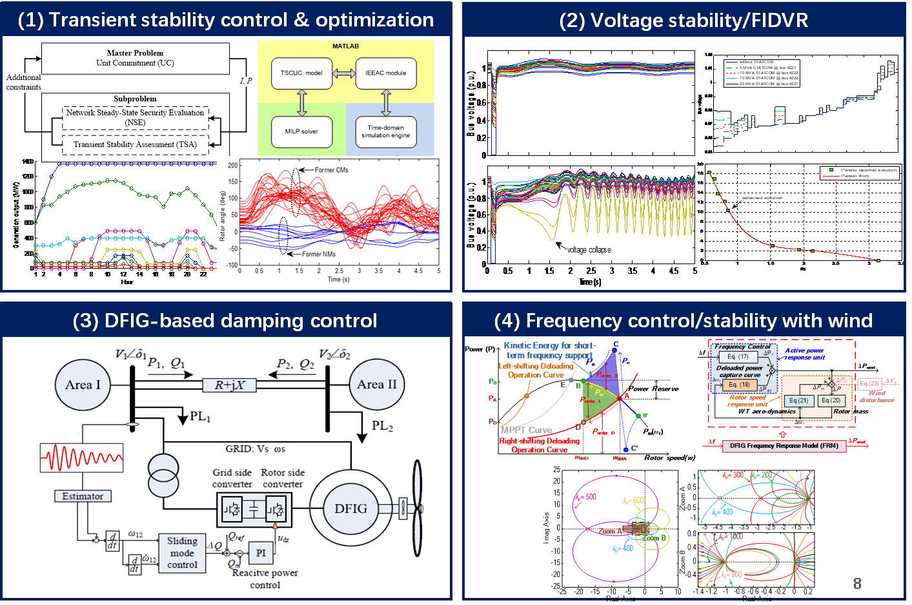

STABILITY AND CONTROL OF RENEWABLE-ENERGY POWER SYSTEMS
This research topic aims to understand the stability characteristics of the modern power system with high-level uncertain and power-converter interfaced renewable energy resources (such as wind and solar power). Based on the understanding, advanced real-time controllers and stability-constrained optimization methods are developed to prevent the power system from instability risks.
We have been investigating three specific stability criteria including transient stability, small-signal stability, voltage stability (short-term and steady-stage), and frequency stability. This research work has been funded by Hong Kong Research Grant Council (RGC), Australian Research Council (ARC), Ausgrid Australia, University of Sydney Postdoctoral Fellowship, Ministry of Education (MoE) of Singapore, National Research Foundation (NRF) of Singapore, DSO National Laboratories of Singapore.

Selected publications in this topic:
- Y. Xu*, et al, “Robust dispatch of high wind power-penetrated power systems against transient instability,” IEEE Trans. Power Syst., 2018.
- Y. Xu*, et al, “Robust transient stability-constrained optimal power flow with uncertain dynamic loads,” IEEE Trans. Smart Grid, 2017.
- Y. Chi, Y. Xu*, and T. Ding, “Coordinated Var Planning for Voltage Stability Enhancement of a Wind-Energy Power System considering Multiple Resilience Indices,” IEEE Trans. Sustainable Energy, 2019.
- Y. Chi and Y. Xu*, “Multi-stage Coordinated Dynamic VAR Source Placement for Voltage Stability Enhancement of Wind-Energy Power System,” IET Gen. Trans. & Dist., 2019.
- M. Yin, Y. Xu, et al, “Turbine stability-constrained available wind power of variable speed wind turbines for active power control,” IEEE Trans. Power Syst., 2017
- K. Liao, Y. Xu*, et al, “Hybrid Control of Doubly-Fed Induction Generators for Short-term and Long-term Frequency Regulation Support in Power Systems,” IET Renewable Power Generation, 2019.
- K. Liao, Y. Xu*, et al, “A Robust DFIG-based Damping Controller Using Variable-Gain Sliding Mode and Kalman Filter Disturbance Observer,” Int. J. Electrical Power and Energy Systems, 2019.
- X. Tan, M. Yin, C. Shen, Y. Xu, et al, “Active Power Control of Wind Turbine Generators via Coordinated Rotor Speed and Pitch Angle Regulation,” IEEE Trans. Sustainable Energy, 2019.
- K. Liao, Y. Xu*, et al, “Second-order sliding mode based P-Q coordinated modulation of DFIGs against interarea oscillations,” IEEE Trans. Power Syst., 2017.
- K. Liao, Y. Xu*, et al, “Hybrid fast damping control scheme for DFIG against power system interarea oscillations,” IET Renewable Power Generation, 2018.
- K. Liao, Z. He, Y. Xu, et al, “A sliding mode based damping control of DFIG for inter-area oscillations,” IEEE Trans. Sustainable Energy, 2017.
- K. Liao and Y. Xu*, “A Robust Load Frequency Control Scheme based on Second-Order Sliding Mode and Extended Disturbance Observer,” IEEE Trans. Industrial Informatics, 2017
- J. Liu, Y. Xu*, et al, “Retirement-driven dynamic VAR planning for voltage stability enhancement of power systems with high-level wind power,” IEEE Trans. Power Syst., 2017.
- Y. Xu*, et al, “Risk-averse multi-objective generation dispatch considering transient stability under load model uncertainty,” IET Gen. Trans. & Dist., 2016.
- Y. Xu*, et al, “A contingency partitioning approach for preventive-corrective security-constrained optimal power flow computation,” Electric Power Systems Research, 2016.
- Y. Xu*, et al, “A decomposition-based practical approach to transient stability-constrained unit commitment,” IEEE Trans. Power Syst., 2015.
- Y. Xu*, et al, “Optimal placement of static compensators for multi-objective voltage stability enhancement of power systems,” IET Gen. Trans. & Dist., 2015.
- Y. Xu*, et al, “Trajectory sensitivity analysis on the equivalent OMIB of multi-machine systems for preventive transient stability control,” IET Gen. Trans. & Dist., 2015.
- Y. Xu*, et al, “Solving preventive-corrective SCOPF by a hybrid computational strategy,” IEEE Trans. Power Syst., 2014.
- Y. Xu*, et al, “Multi-objective dynamic VAR planning against short-term voltage instability using a decomposition-based evolutionary algorithm,” IEEE Trans. Power Systems, 2014.
- Y. Xu*, et al, “Parallel-differential evolution approach for optimal event-driven load shedding against voltage collapse in power systems,” IET Gen. Trans. & Dist., 2014.
- Y. Xu, et al, “A hybrid method for transient stability constrained-optimal power flow computation,” IEEE Trans. Power Syst., 2012.